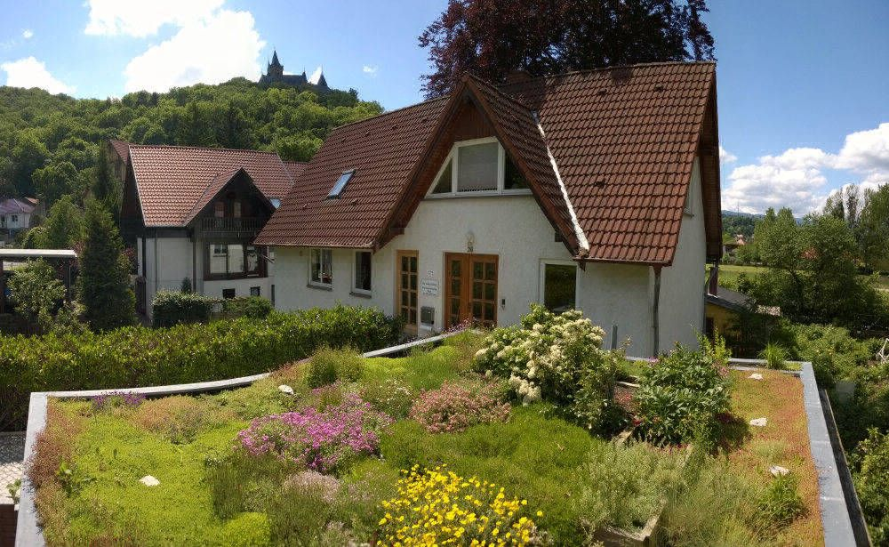
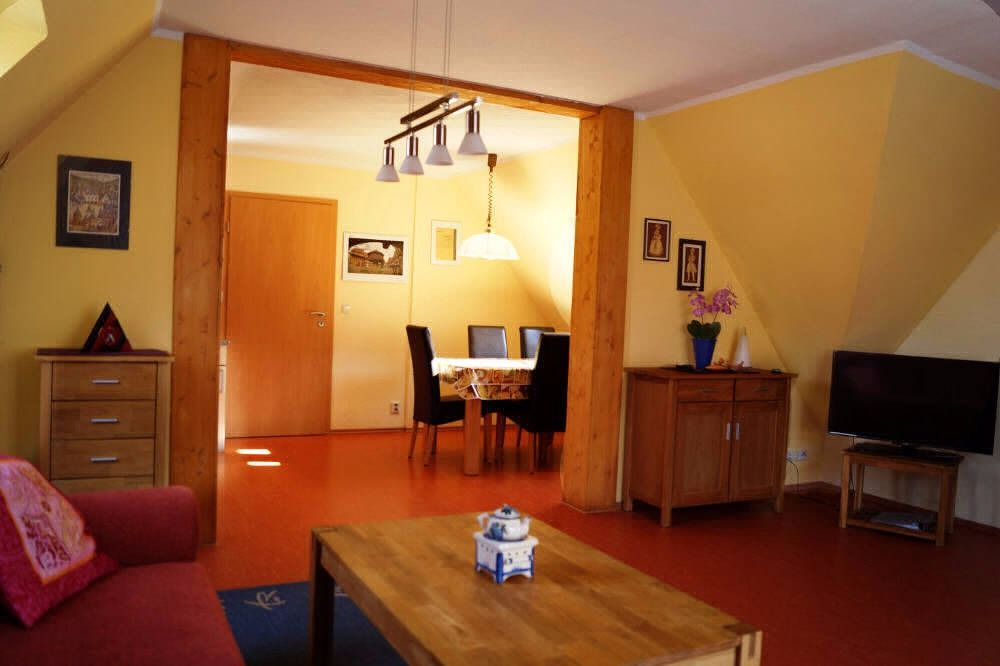

Zentral in der Altstadt
Am Rand der historischen Altstadt, unterhalb des Schlosses und direkt am Randwanderweg R1. In nur 10 Gehminuten sind Sie am Marktplatz oder am Schloss Wernigerode.

Wernigerode · Harz
Moderne, familienfreundliche Wohnung am Rande der Altstadt – unterhalb des Schlosses und direkt am Lustgarten.
Die Wohnung
Eine großzügige 90-m²-Wohnung für bis zu 4 Personen plus Kinder – mit Wohnbereich, Essbereich, Küche, Bad, Garten und Grillplatz.
Am Rand der historischen Altstadt, unterhalb des Schlosses und direkt am Randwanderweg R1. In nur 10 Gehminuten sind Sie am Marktplatz oder am Schloss Wernigerode.
Vor der Haustür liegen der Park „Lustgarten“ und der Schlosswald – ideal zum Spazierengehen und Wandern.
Auf Wunsch kostenlos Kinderstuhl und Kinderbett. Im Umkreis von fünf Minuten gibt es drei Spielplätze.
Die Ferienwohnung hat einen eigenen kostenfreien Parkplatz, weitere kostenlose Parkplätze finden Sie in direkter Nähe.
Unsere Gäste nutzen das WLAN in der Ferienwohnung kostenlos.
Separater Gartenbereich mit großem Esstisch und Holzkohlegrill.
Handtücher sind inklusive, Bettwäsche gibt es auf Wunsch gegen Aufpreis.
Fotos
Tippen Sie auf ein Foto, um es zu vergrößern.
Lage
Die Ferienwohnung liegt am Rand der historischen Altstadt, unterhalb des Schlosses und unmittelbar am Randwanderweg R1. In nur 10 Gehminuten spazieren Sie zum Marktplatz oder zum Schloss Wernigerode.
Direkt vor der Haustür liegen der Park „Lustgarten“ (Barockgarten) und der Schlosswald. Drei Spielplätze sind in fünf Minuten erreichbar.
Adresse: Lindenallee 26, 38855 Wernigerode

Leistungen & Preise
Jede weitere Person kostet 15 € pro Nacht. Handtücher, WLAN, Strom, Wasser und Parkplatz sind bereits enthalten.
Eine saubere Ferienwohnung ist für uns selbstverständlich. Für die Endreinigung erheben wir einmalig eine Service-Gebühr.
Bettwäsche einmalig 5 € pro Bettensatz. Hunde pauschal 25 € pro Aufenthalt.
Häufige Fragen
Die Ferienwohnung hat 90 m² und bietet Platz für bis zu 4 Personen plus Kinder. Über das Anfrageformular können bis zu 6 Personen angefragt werden.
50 EUR pro Nacht für 2 Personen. Jede weitere Person kostet 15 EUR pro Nacht. Handtücher, WLAN, Strom, Wasser und Parkplatz sind im Preis enthalten.
Einmalig 30 EUR Endreinigung. Bettwäsche kostet auf Wunsch einmalig 5 EUR pro Bettensatz. Für Hunde berechnen wir pauschal 25 EUR pro Aufenthalt.
Ja, ein kostenloser Parkplatz gehört zur Ferienwohnung, weitere kostenlose Parkplätze sind in der Nähe. Das WLAN ist kostenlos.
Ja. Kinderstuhl und Kinderbett stehen auf Wunsch kostenlos bereit, drei Spielplätze liegen im Umkreis von fünf Minuten.
Zum Marktplatz und zum Schloss Wernigerode sind es etwa 10 Gehminuten. Die Wohnung liegt direkt am Randwanderweg R1.
Ja, Hunde sind auf Anfrage willkommen (pauschal 25 EUR pro Aufenthalt).
Per Anfrageformular auf dieser Seite, per E-Mail an info@harzberge.de oder telefonisch unter 0178 / 4307460 bzw. 03943 / 43074.
Fewo frei?
Wir freuen uns über Ihre Anfrage – unverbindlich und kostenlos.